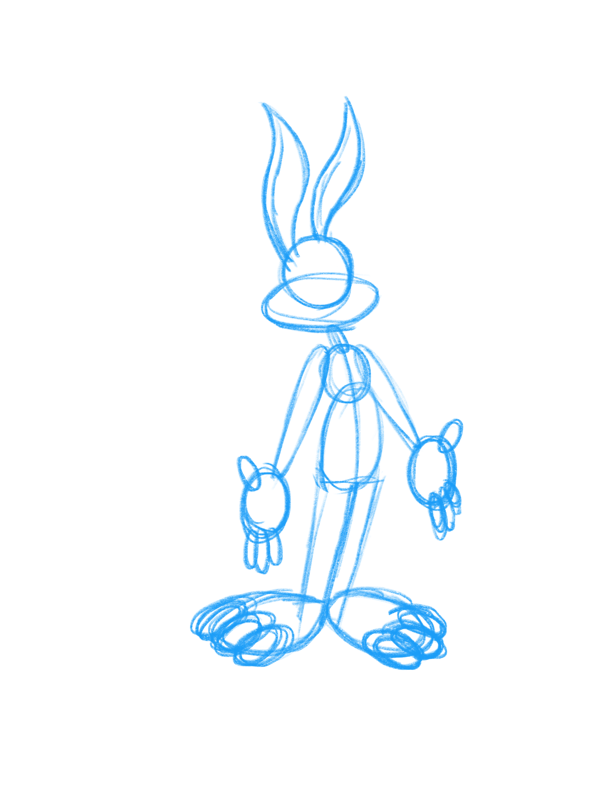
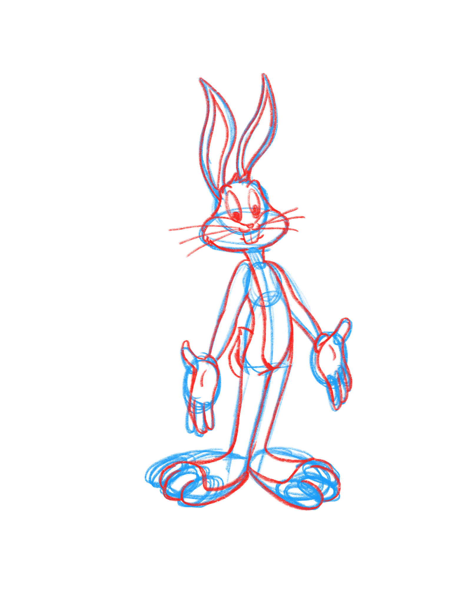
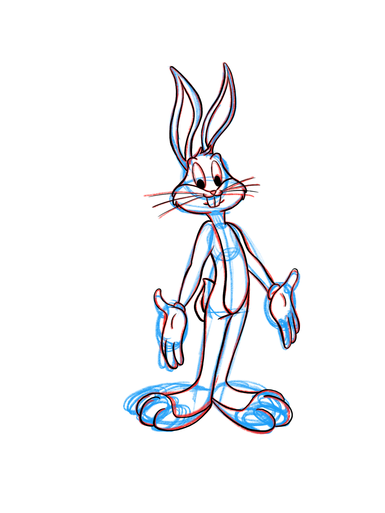
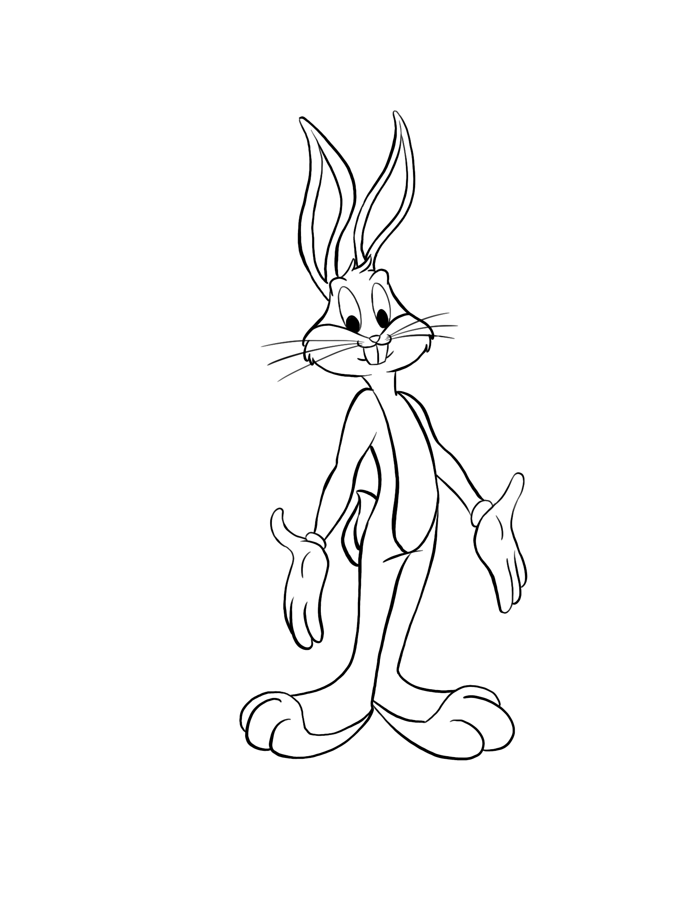

Step 1: Draw Rough Shapes |
First, draw rough shapes of how you want Bugs to be posed. Using basic shapes also helps with keeping proportion. |
 |
Step 2: Draw Details |
Second, use the shapes to help fill in all the details. I used different color pencils to help keep shapes and details separated, this also helps with the inking. |  |
Step 3: Ink The Drawing |
Third, trace over the detailed pencil sketch with ink, or digital ink. It doesn't have to be perfect, it's okay to change your mind and put a line in a different place. |  |
Step 4: Erase Pencil Lines |
Finally, erase the pencil sketch and you are left with the complete drawing of Bugs. From here you can choose to color if you see fit. |  |